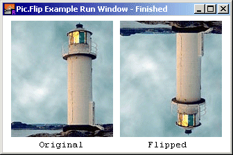

Pic.Flip (picID : int) : int
Pic.Flip is used to create a new picture by flipping the picture vertically. The resulting picture is exactly the same size as the original, except it appears “upside-down”.
Note that the upside-down picture is a newly created picture. When it is no longer needed, its memory should be released by using Pic.Free.
The program loads a picture from a file, flips it and then draws the original and the upside-down image side by side in a window after resizing the window to fit the two pictures.

% Get the original picture
var pic, newPic, width, height : int
pic := Pic.FileNew ("lighthouse.jpg")
newPic := Pic.Flip (pic)
width := Pic.Width (pic)
height := Pic.Height (pic)
% Draw the two images: original and flipped
View.Set ("graphics:" + intstr (2 * width + 30) + ";" +
intstr (height + 25) + ",nobuttonbar")
Pic.Draw (pic, 10, 20, picCopy)
Draw.Text ("Original", 50, 5, defFontID, black)
Pic.Draw (newPic, 20 + Pic.Width (pic), 20, picCopy)
Draw.Text ("Flipped", 60 + Pic.Width (pic), 5, defFontID, black)
Exported qualified. This means that you can only call the function by calling Pic.Flip, not by calling Flip.